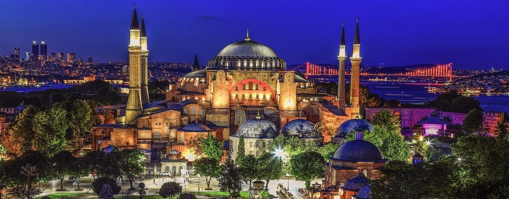

Your next destination could be...
Hagia Sophia
The Hagia Sophia is a magnificent architectural masterpiece located in Istanbul, Turkey. It was originally built as a cathedral in the 6th century, and later converted into a mosque in the 15th century. Today, it serves as a museum and is a UNESCO World Heritage site.
The Hagia Sophia was designed by two renowned architects, Anthemius of Tralles and Isidorus of Miletus, and was completed in just five years. The building is known for its innovative design, which combines elements of both Eastern and Western architecture. It is considered a masterpiece of Byzantine architecture, and is one of the most famous landmarks in Istanbul.
The Hagia Sophia is famous for its dome, which is considered one of the greatest feats of engineering in history. The dome is over 100 feet in diameter and is supported by four piers, which are connected by a series of arches. The dome is adorned with intricate mosaics and frescoes, which depict scenes from the life of Jesus Christ and the Virgin Mary.
The interior of the Hagia Sophia is equally impressive, with a series of chapels, altar screens, and galleries that are adorned with beautiful mosaics and frescoes. The building is also home to a number of other architectural features, including marble columns, arches, and niches.
In addition to its architectural and artistic beauty, the Hagia Sophia has a rich history. It has served as a cathedral, a mosque, and a museum over the centuries, and has been a symbol of Istanbul's religious and cultural diversity. It has also been a site of major historical events, including the coronation of the Byzantine emperors and the conquest of Constantinople by the Ottoman Turks.
Today, the Hagia Sophia is a popular tourist destination, attracting millions of visitors each year. It is a must-see destination for anyone visiting Istanbul, and is a testament to the city's rich history and cultural heritage.
Learn MoreBlue Mosque

The Blue Mosque, also known as the Sultan Ahmed Mosque, is a stunning architectural masterpiece located in Istanbul, Turkey. It is one of the city's most iconic landmarks, and is known for its stunning blue tiles, six minarets, and central dome.
The Blue Mosque was built in the early 17th century, during the reign of Ottoman sultan Ahmed I. It was designed by the architect Sedefkar Mehmed Aga, and is considered one of the greatest examples of Ottoman architecture. The mosque is adorned with over 20,000 blue tiles, which give it its distinctive name.
The interior of the Blue Mosque is equally impressive, with a series of domes, arches, and pillars that are adorned with intricate patterns and decorations. The main prayer hall is surrounded by a series of galleries, which are supported by over 260 marble columns. The mosque is also home to a number of other architectural features, including a grand chandelier and a series of intricate calligraphy panels.
In addition to its architectural beauty, the Blue Mosque is an important religious site for Muslims. It is one of the largest mosques in Istanbul, and can accommodate up to 10,000 worshippers at a time. It is also a popular destination for tourists, who come to admire its beauty and learn about the city's rich cultural heritage.
The Blue Mosque is located in the heart of Istanbul, and is surrounded by a number of other famous landmarks, including the Hagia Sophia and the Grand Bazaar. It is a popular spot for tourists and locals alike, and is a must-see destination for anyone visiting Istanbul.
Learn More